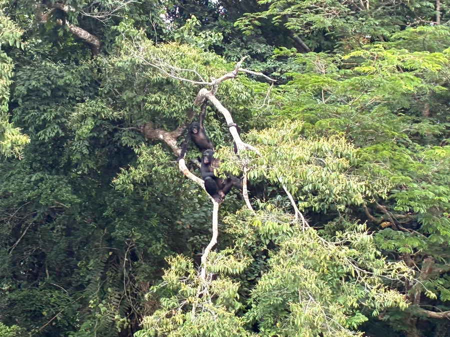

哺乳动物 · 动物界
倭黑猩猩 Pan paniscus

与黑猩猩同属的近缘猿类，体形更纤细、头毛中分，仅分布于刚果河南岸，以雌性为中心的社会和善用性行为化解冲突而著称。
- 分类
- 门脊索动物门纲哺乳纲目灵长目科人科属黑猩猩属
- 栖息环境
- 刚果盆地南部的低地热带雨林，偏好湿润的沼泽林与次生林
- 地理分布
- 刚果民主共和国刚果河以南的雨林地区
- 保护级别
- IUCN 濒危（EN）；CITES 附录Ⅰ
物种志
倭黑猩猩体形比黑猩猩纤细，四肢较长，肩窄胸薄，成年体重约 30–45 千克，雌性略轻；毛色乌黑，头顶毛发自然从中分向两侧，形成标志性的“中分头”，嘴唇与眼周裸皮呈深色，耳朵较小。幼年个体面部颜色较浅，随年龄加深。
它们仅分布在刚果民主共和国境内刚果河以南的热带雨林，营半树栖生活，白天在树冠与地面间往返觅食果实、嫩叶、茎髓和昆虫，夜间用枝叶筑巢过夜。群体由多只成年雌性和幼仔为核心，雌性地位高于雄性，母子关系维系终生。倭黑猩猩以频繁的安抚性接触和社交行为缓和群体紧张，被认为是研究人类合作与和平行为的重要对象。它们繁殖缓慢，雌性约 5–6 年产一仔，种群恢复能力弱，偷猎与森林砍伐是主要威胁。
形态与习性
- 体重雄性约 35–45 kg，雌性约 25–35 kg
- 体长站立时约 1.0–1.2 m，臂展略长于身高
- 食性以果实为主，兼食嫩叶、茎髓、花、昆虫与蜂蜜
- 繁殖孕期约 240 天，每胎一仔，间隔约 5 年
- 寿命野外约 40 年，饲养下可超过 50 年
- 社会结构以雌性为核心，群体由母系亲缘关系联结
- 种群现状野生个体估计 1.5 万–2 万只，分布区仍在收缩
趣味知识
- 倭黑猩猩头顶的毛发天然中分，看上去始终梳着整齐的偏分头。
- 它们会用拥抱、理毛和社交接触化解冲突，群体暴力远少于黑猩猩。
- 雌性倭黑猩猩成年后仍与母亲保持密切往来，形成稳定的母系网络。